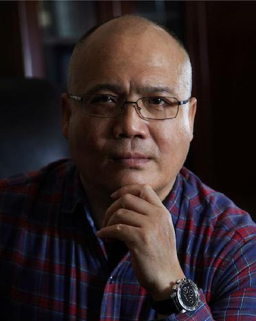

NOT ONLY A PHOTOGRAHER
BUT ALSO A LIFE RECORDER
My dad's name is Weihua Huang, who was born and raised in China. The art of photography is part of his life. As an amateur photographer, he lays his footprints on many fabulous places with beautiful scenery, astonishing landscapes, charming people, and inspiring culture. Currently, he is member of Global Photographic Union, Royal Photographic Society, and Photographic Society of America (China). Since April 2016, he has been actively participating 30+ international shows and contests for photography and received nominations for 160+ of my artefacts. Multiple photographs of his were granted gold and silver medals, prizes from the nominating committee, and honor belt awards. It is his dream to see, record, read, and understand the unknown Chinese lands and cultures through my lenses, and to open an exhibition of my work under the theme of “A Different World”.